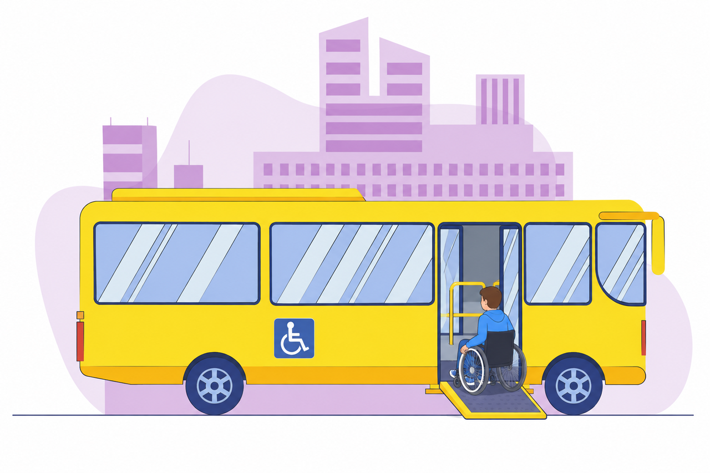

Mjedisi i vendit tim
Transporti publik dhe ai ekologjik
Jona po fliste vazhdimisht për rëndësinë e ruajtjes së ambientit, për rëndësinë e hedhjes së mbeturinave në vendin e duhur, për mbjelljen e bimëve, për përdorimin sa më të paktë të makinave.
Nëna dhe babai i Jonës e dëgjonin me vëmendje dhe krenoheshin me vajzën e tyre që donte ta ruante ambientin. Një ditë, teksa po udhëtonin për te gjyshërit në një qytet tjetër, Jonës i tërhoqi vëmendjen një autobus i gjatë me ngjyrë të verdhë. Disa njerëz po rrinin në këmbë e të tjerë ishin të ulur në të. Jona pyeti prindërit e saj: - Përse njerëzit udhëtonin me autobus kur nuk kishin vend dhe duhej të rrinin në këmbë?
Babai buzëqeshi dhe e pyeti Jonën: - Këta njerëz po i bënin mirë ambientit apo dëm? Jona u mendua pak dhe u përgjigj: - Natyrisht që po i bënin mirë. Po të përdorte secili nga këta njerëz veturën, atëherë do të digjeshin më shumë lëndë djegëse dhe do të ndotej ambienti. Sa i dobishëm qenka përdorimi i autobusit, - shtoi ajo.
Nëna, e lumturuar nga përgjigjet e Jonës, shtoi: - Ky lloj transporti quhet transport publik dhe është i destinuar për të gjithë qytetarët. Ai funksionon sipas një orari, ndjek një linjë rruge të caktuar dhe për të shfrytëzuar atë caktohet një çmim standard. - Mendoj që edhe ne, - tha Jona, - duhet të udhëtojmë me transport publik tash e tutje. Prindërve u pëlqeu ideja e saj.
